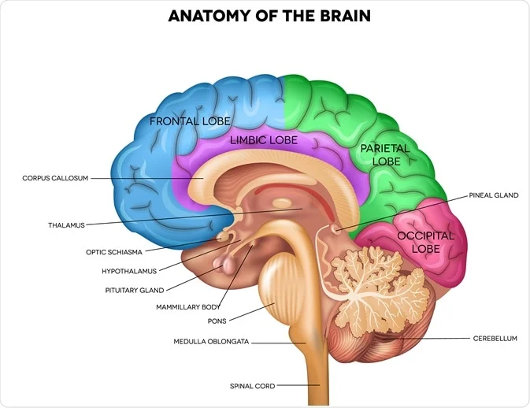
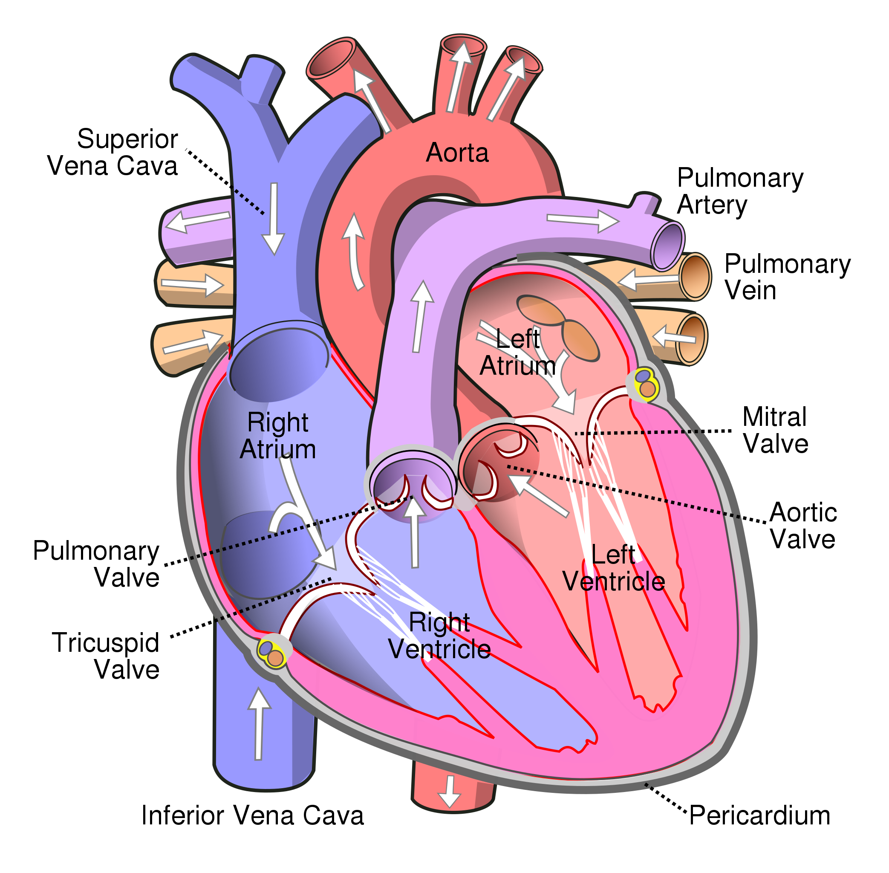
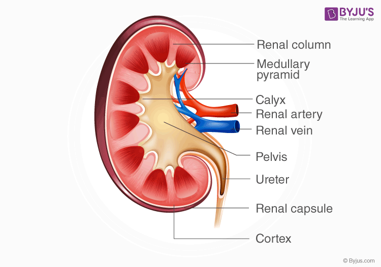
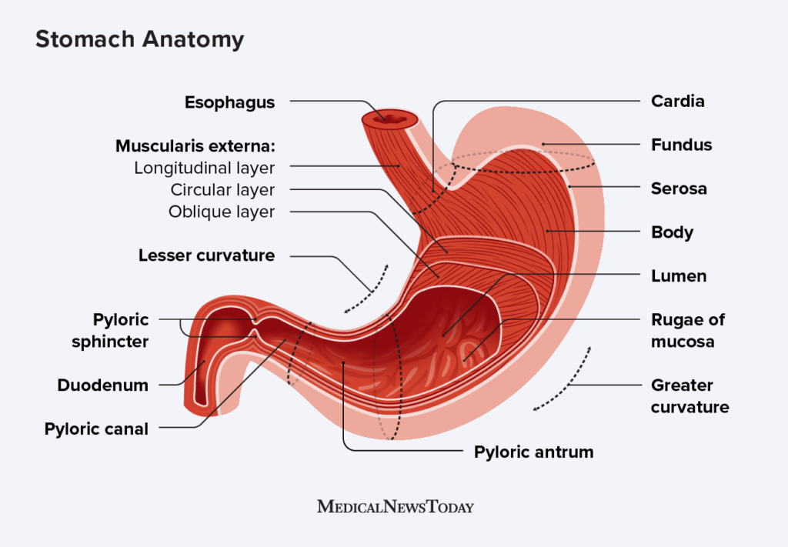
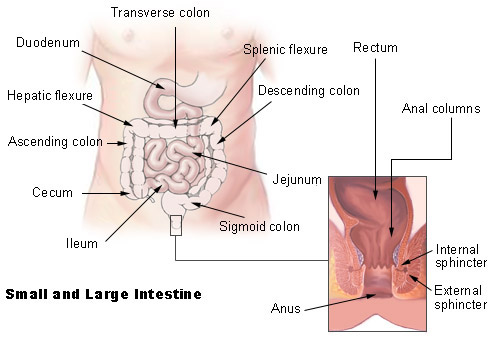

body
A body is the physical material of a person or organism. It is only used for organisms which are in one part or whole. There are organisms which change from single cells to whole organisms: for example, slime moulds. For them the term 'body' would mean the multicellular stage. Other uses:
- Plant body
- Cell body: here it may be used for cells like neurons which have long axons (nerve fibres). The cell body is the part with the nucleus in it
The body of a dead person is also called a corpse or cadaver. The dead bodies of vertebrate animals and insects are sometimes called carcasses
The human body has a head, neck, torso, two arms, two legs and the genitals of the groin, which differ between males and females
The study of the body is anatomy. The study of the workings of the body is physiology. Here are the names of the body parts of a woman and a man. The word body is sometimes used in other ways. For example, a lake is a body of water. The laws on a topic are a "body of law".

brain
The human brain is the central organ of the human nervous system, and with the spinal cord makes up the central nervous system. The brain consists of the cerebrum, the brainstem and the cerebellum. It controls most of the activities of the body, processing, integrating, and coordinating the information it receives from the sense organs, and making decisions as to the instructions sent to the rest of the body. The brain is contained in, and protected by, the skull bones of the head.
The cerebrum, the largest part of the human brain, consists of two cerebral hemispheres. Each hemisphere has an inner core composed of white matter, and an outer surface – the cerebral cortex – composed of grey matter. The cortex has an outer layer, the neocortex, and an inner allocortex. The neocortex is made up of six neuronal layers, while the allocortex has three or four. Each hemisphere is conventionally divided into four lobes – the frontal, temporal, parietal, and occipital lobes. The frontal lobe is associated with executive functions including self-control, planning, reasoning, and abstract thought, while the occipital lobe is dedicated to vision. Within each lobe, cortical areas are associated with specific functions, such as the sensory, motor and association regions. Although the left and right hemispheres are broadly similar in shape and function, some functions are associated with one side, such as language in the left and visual-spatial ability in the right. The hemispheres are connected by commissural nerve tracts, the largest being the corpus callosum
The cerebrum is connected by the brainstem to the spinal cord. The brainstem consists of the midbrain, the pons, and the medulla oblongata. The cerebellum is connected to the brainstem by three pairs of nerve tracts called cerebellar peduncles. Within the cerebrum is the ventricular system, consisting of four interconnected ventricles in which cerebrospinal fluid is produced and circulated. Underneath the cerebral cortex are several important structures, including the thalamus, the epithalamus, the pineal gland, the hypothalamus, the pituitary gland, and the subthalamus; the limbic structures, including the amygdalae and the hippocampi, the claustrum, the various nuclei of the basal ganglia, the basal forebrain structures, and the three circumventricular organs. Brain structures that are not on the midplane exist in pairs, so there are for example two hippocampi and two amygdalae. The cells of the brain include neurons and supportive glial cells. There are more than 86 billion neurons in the brain, and a more or less equal number of other cells. Brain activity is made possible by the interconnections of neurons and their release of neurotransmitters in response to nerve impulses. Neurons connect to form neural pathways, neural circuits, and elaborate network systems. The whole circuitry is driven by the process of neurotransmission
The brain is protected by the skull, suspended in cerebrospinal fluid, and isolated from the bloodstream by the blood–brain barrier. However, the brain is still susceptible to damage, disease, and infection. Damage can be caused by trauma, or a loss of blood supply known as a stroke. The brain is susceptible to degenerative disorders, such as Parkinson's disease, dementias including Alzheimer's disease, and multiple sclerosis. Psychiatric conditions, including schizophrenia and clinical depression, are thought to be associated with brain dysfunctions. The brain can also be the site of tumours, both benign and malignant; these mostly originate from other sites in the body
The study of the anatomy of the brain is neuroanatomy, while the study of its function is neuroscience. Numerous techniques are used to study the brain. Specimens from other animals, which may be examined microscopically, have traditionally provided much information. Medical imaging technologies such as functional neuroimaging, and electroencephalography (EEG) recordings are important in studying the brain. The medical history of people with brain injury has provided insight into the function of each part of the brain. Neuroscience research has expanded considerably, and research is ongoing.
In culture, the philosophy of mind has for centuries attempted to address the question of the nature of consciousness and the mind–body problem. The pseudoscience of phrenology attempted to localise personality attributes to regions of the cortex in the 19th century. In science fiction, brain transplants are imagined in tales such as the 1942 Donovan's Brain.
The adult human brain weighs on average about 1.2–1.4 kg (2.6–3.1 lb) which is about 2% of the total body weight,[2][3] with a volume of around 1260 cm3 in men and 1130 cm3 in women.[4] There is substantial individual variation,[4] with the standard reference range for men being 1,180–1,620 g (2.60–3.57 lb)[5] and for women 1,030–1,400 g (2.27–3.09 lb).[6]
Lungs
The lungs are the primary organs of the respiratory system in humans and most other animals, including some snails and a small number of fish. In mammals and most other vertebrates, two lungs are located near the backbone on either side of the heart. Their function in the respiratory system is to extract oxygen from the air and transfer it into the bloodstream, and to release carbon dioxide from the bloodstream into the atmosphere, in a process of gas exchange. The pleurae, which are thin, smooth, and moist, serve to reduce friction between the lungs and chest wall during breathing, allowing for easy and effortless movements of the lungs.
Respiration is driven by different muscular systems in different species. Mammals, reptiles and birds use their different muscles to support and foster breathing. In earlier tetrapods, air was driven into the lungs by the pharyngeal muscles via buccal pumping, a mechanism still seen in amphibians. In humans, the main muscle of respiration that drives breathing is the diaphragm. The lungs also provide airflow that makes vocal sounds including human speech possible
Humans have two lungs, one on the left and one on the right. They are situated within the thoracic cavity of the chest. The right lung is bigger and heavier than the left, which shares space in the chest with the heart. The lungs together weigh approximately 1.3 kilograms (2.9 pounds). The lungs are part of the lower respiratory tract that begins at the trachea and branches into the bronchi and bronchioles, and which receive air breathed in via the conducting zone. The conducting zone ends at the terminal bronchioles. These divide into the respiratory bronchioles of the respiratory zone which divide into alveolar ducts that give rise to the alveolar sacs that contain the alveoli, where gas exchange takes place. Alveoli are also sparsely present on the walls of the respiratory bronchioles and alveolar ducts. Together, the lungs contain approximately 2,400 kilometres (1,500 miles) of airways and 300 to 500 million alveoli. Each lung is enclosed within a pleural sac of two membranes called pleurae; the membranes are separated by a film of pleural fluid, which allows the inner and outer membranes to slide over each other whilst breathing takes place, without much friction. The inner pleura also divides each lung into sections called lobes. The right lung has three lobes and the left has two. The lobes are further divided into bronchopulmonary segments and pulmonary lobules. The lungs have a unique blood supply, receiving deoxygenated blood from the heart in the pulmonary circulation for the purposes of receiving oxygen and releasing carbon dioxide, and a separate supply of oxygenated blood to the tissue of the lungs, in the bronchial circulation.
The tissue of the lungs can be affected by a number of respiratory diseases, including pneumonia and lung cancer. Chronic obstructive pulmonary disease includes chronic bronchitis and emphysema, and can be related to smoking or exposure to harmful substances. A number of occupational lung diseases can be caused by substances such as coal dust, asbestos fibres, and crystalline silica dust. Diseases such as bronchitis can also affect the respiratory tract. Medical terms related to the lung often begin with pulmo-, from the Latin pulmonarius (of the lungs) as in pulmonology, or with pneumo- (from Greek πνεύμων "lung") as in pneumonia
In embryonic development, the lungs begin to develop as an outpouching of the foregut, a tube which goes on to form the upper part of the digestive system. When the lungs are formed the fetus is held in the fluid-filled amniotic sac and so they do not function to breathe. Blood is also diverted from the lungs through the ductus arteriosus. At birth, however, air begins to pass through the lungs, and the diversionary duct closes, so that the lungs can begin to respire. The lungs only fully develop in early childhood

heart
The heart is a muscular organ in most animals. This organ pumps blood through the blood vessels of the circulatory system.[1] The pumped blood carries oxygen and nutrients to the body, while carrying metabolic waste such as carbon dioxide to the lungs. In humans, the heart is approximately the size of a closed fist and is located between the lungs, in the middle compartment of the chest, called the mediastinum
In humans, other mammals, and birds, the heart is divided into four chambers: upper left and right atria and lower left and right ventricles. Commonly the right atrium and ventricle are referred together as the right heart and their left counterparts as the left heart. Fish, in contrast, have two chambers, an atrium and a ventricle, while most reptiles have three chambers. In a healthy heart blood flows one way through the heart due to heart valves, which prevent backflow.The heart is enclosed in a protective sac, the pericardium, which also contains a small amount of fluid. The wall of the heart is made up of three layers: epicardium, myocardium, and endocardium
The heart pumps blood with a rhythm determined by a group of pacemaker cells in the sinoatrial node. These generate a current that causes the heart to contract, traveling through the atrioventricular node and along the conduction system of the heart. In humans, deoxygenated blood enters the heart through the right atrium from the superior and inferior venae cavae and passes to the right ventricle. From here it is pumped into pulmonary circulation to the lungs, where it receives oxygen and gives off carbon dioxide. Oxygenated blood then returns to the left atrium, passes through the left ventricle and is pumped out through the aorta into systemic circulation, traveling through arteries, arterioles, and capillaries—where nutrients and other substances are exchanged between blood vessels and cells, losing oxygen and gaining carbon dioxide—before being returned to the heart through venules and veins. The heart beats at a resting rate close to 72 beats per minute.Exercise temporarily increases the rate, but lowers it in the long term, and is good for heart health..
Cardiovascular diseases are the most common cause of death globally as of 2008, accounting for 30% of deaths.[11][12] Of these more than three-quarters are a result of coronary artery disease and stroke.Risk factors include: smoking, being overweight, little exercise, high cholesterol, high blood pressure, and poorly controlled diabetes, among others.Cardiovascular diseases do not frequently have symptoms but may cause chest pain or shortness of breath. Diagnosis of heart disease is often done by the taking of a medical history, listening to the heart-sounds with a stethoscope, as well as with ECG, echocardiogram, and ultrasound.Specialists who focus on diseases of the heart are called cardiologists, although many specialties of medicine may be involved in treatment.
{kind=link}
Kidney
In humans, the kidneys are two reddish-brown bean-shaped blood-filtering organs[1] that are a multilobar multipapillary form of mammalian kidney, usually without signs of external lobulation.They are located on the left and right in the retroperitoneal space, and in adult humans are about 12 centimetres (4+1⁄2 inches) in length. They receive blood from the paired renal arteries; blood exits into the paired renal veins. Each kidney is attached to a ureter, a tube that carries excreted urine to the bladder
The kidney participates in the control of the volume of various body fluids, fluid osmolality, acid–base balance, various electrolyte concentrations, and removal of toxins. Filtration occurs in the glomerulus: one-fifth of the blood volume that enters the kidneys is filtered. Examples of substances reabsorbed are solute-free water, sodium, bicarbonate, glucose, and amino acids. Examples of substances secreted are hydrogen, ammonium, potassium and uric acid. The nephron is the structural and functional unit of the kidney. Each adult human kidney contains around 1 million nephrons, while a mouse kidney contains only about 12,500 nephrons. The kidneys also carry out functions independent of the nephrons. For example, they convert a precursor of vitamin D to its active form, calcitriol; and synthesize the hormones erythropoietin and renin
Chronic kidney disease (CKD) has been recognized as a leading public health problem worldwide. The global estimated prevalence of CKD is 13.4%, and patients with kidney failure needing renal replacement therapy are estimated between 5 and 7 million.[6] Procedures used in the management of kidney disease include chemical and microscopic examination of the urine (urinalysis), measurement of kidney function by calculating the estimated glomerular filtration rate (eGFR) using the serum creatinine; and kidney biopsy and CT scan to evaluate for abnormal anatomy. Dialysis and kidney transplantation are used to treat kidney failure; one (or both sequentially) of these are almost always used when renal function drops below 15%. Nephrectomy is frequently used to cure renal cell carcinoma.
Renal physiology is the study of kidney function. Nephrology is the medical specialty which addresses diseases of kidney function: these include CKD, nephritic and nephrotic syndromes, acute kidney injury, and pyelonephritis. Urology addresses diseases of kidney (and urinary tract) anatomy: these include cancer, renal cysts, kidney stones and ureteral stones, and urinary tract obstruction
The word “renal” is an adjective meaning “relating to the kidneys”, and its roots are French or late Latin. Whereas according to some opinions, "renal" should be replaced with "kidney" in scientific writings such as "kidney artery", other experts have advocated preserving the use of "renal" as appropriate including in "renal artery"
{kind=link}
Liver
The liver is a major metabolic organ only found in vertebrate animals, which performs many essential biological functions such as detoxification of the organism, and the synthesis of proteins and biochemicals necessary for digestion and growth.In humans, it is located in the right upper quadrant of the abdomen, below the diaphragm and mostly shielded by the lower right rib cage. Its other metabolic roles include carbohydrate metabolism, the production of hormones, conversion and storage of nutrients such as glucose and glycogen, and the decomposition of red blood cells
The liver is also an accessory digestive organ that produces bile, an alkaline fluid containing cholesterol and bile acids, which emulsifies and aids the breakdown of dietary fat. The gallbladder, a small hollow pouch that sits just under the right lobe of liver, stores and concentrates the bile produced by the liver, which is later excreted to the duodenum to help with digestion.The liver's highly specialized tissue, consisting mostly of hepatocytes, regulates a wide variety of high-volume biochemical reactions, including the synthesis and breakdown of small and complex organic molecules, many of which are necessary for normal vital functions. Estimates regarding the organ's total number of functions vary, but is generally cited as being around 500.
It is not known how to compensate for the absence of liver function in the long term, although liver dialysis techniques can be used in the short term. Artificial livers have not been developed to promote long-term replacement in the absence of the liver. As of 2018, liver transplantation is the only option for complete liver failure.

stomach
The stomach is a muscular, hollow organ in the gastrointestinal tract of humans and many other animals, including several invertebrates. The stomach has a dilated structure and functions as a vital organ in the digestive system. The stomach is involved in the gastric phase of digestion, following chewing. It performs a chemical breakdown by means of enzymes and hydrochloric acid.
In humans and many other animals, the stomach is located between the esophagus and the small intestine. The stomach secretes digestive enzymes and gastric acid to aid in food digestion. The pyloric sphincter controls the passage of partially digested food (chyme) from the stomach into the duodenum, where peristalsis takes over to move this through the rest of the intestines.
{kind=link}
Intestine
The small intestine or small bowel is an organ in the gastrointestinal tract where most of the absorption of nutrients from food takes place. It lies between the stomach and large intestine, and receives bile and pancreatic juice through the pancreatic duct to aid in digestion. The small intestine is about 5.5 metres (18 feet) long and folds many times to fit in the abdomen. Although it is longer than the large intestine, it is called the small intestine because it is narrower in diameter.
The small intestine has three distinct regions – the duodenum, jejunum, and ileum. The duodenum, the shortest, is where preparation for absorption through small finger-like protrusions called villi begins.[2] The jejunum is specialized for the absorption through its lining by enterocytes: small nutrient particles which have been previously digested by enzymes in the duodenum. The main function of the ileum is to absorb vitamin B12, bile salts, and whatever products of digestion that were not absorbed by the jejunum
The length of the small intestine can vary greatly, from as short as 3 metres (10 feet) to as long as 10.5 m (34+1⁄2 ft), also depending on the measuring technique used.The typical length in a living person is 3–5 m (10–16+1⁄2 ft).The length depends both on how tall the person is and how the length is measured.Taller people generally have a longer small intestine and measurements are generally longer after death and when the bowel is empty. It is approximately 1.5 centimetres (5⁄8 inch) in diameter in newborns after 35 weeks of gestational age, and 2.5–3 cm (1–1+1⁄8 in) in diameter in adults. On abdominal X-rays, the small intestine is considered to be abnormally dilated when the diameter exceeds 3 cm.[8][9] On CT scans, a diameter of over 2.5 cm is considered abnormally dilated.[8][10] The surface area of the human small intestinal mucosa, due to enlargement caused by folds, villi and microvilli, averages 30 square metres (320 sq ft).
{kind=link}
Male_Reproductive
The male reproductive system consists of a number of sex organs that play a role in the process of human reproduction. These organs are located on the outside of the body and within the pelvis.
The main male sex organs are the penis and the testicles which produce semen and sperm, which, as part of sexual intercourse, fertilize an ovum in the female's body; the fertilized ovum (zygote) develops into a fetus, which is later born as an infant.
The corresponding system in females is the female reproductive system

Female-Reproductive
The female reproductive system is made up of the internal and external sex organs that function in the reproduction of new offspring. In humans, the female reproductive system is immature at birth and develops to maturity at puberty to be able to produce gametes, and to carry a fetus to full term. The internal sex organs are the vagina, uterus, fallopian tubes, and ovaries. The female reproductive tract includes the vagina, uterus, and fallopian tubes and is prone to infections.[1] The vagina allows for sexual intercourse and childbirth, and is connected to the uterus at the cervix. The uterus or womb accommodates the embryo which develops into the fetus. The uterus also produces secretions which help the transit of sperm to the fallopian tubes, where sperm fertilize ova (egg cells) produced by the ovaries. The external sex organs are also known as the genitals and these are the organs of the vulva including the labia, clitoris, and vaginal opening
During the menstrual cycle, the ovaries release an ovum, which transits through the fallopian tube into the uterus. If an egg cell meets with sperm on its way to the uterus, a single sperm cell can enter and merge with it, fertilizing it into a zygote
Fertilization usually occurs in the fallopian tubes and marks the beginning of embryogenesis. The zygote will then divide over enough generations of cells to form a blastocyst, which implants itself in the wall of the uterus. This begins the period of gestation and the embryo will continue to develop until full-term. When the fetus has developed enough to survive outside the uterus, the cervix dilates and contractions of the uterus propel the newborn through the birth canal (the vagina)
The corresponding equivalent among males is the male reproductive system.